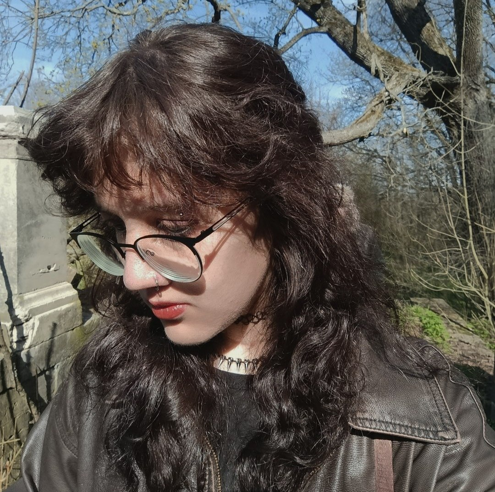
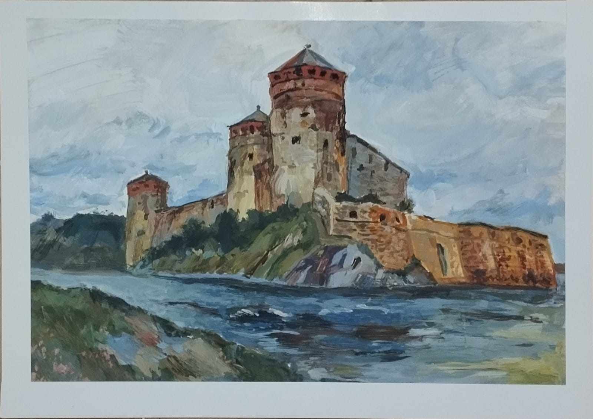
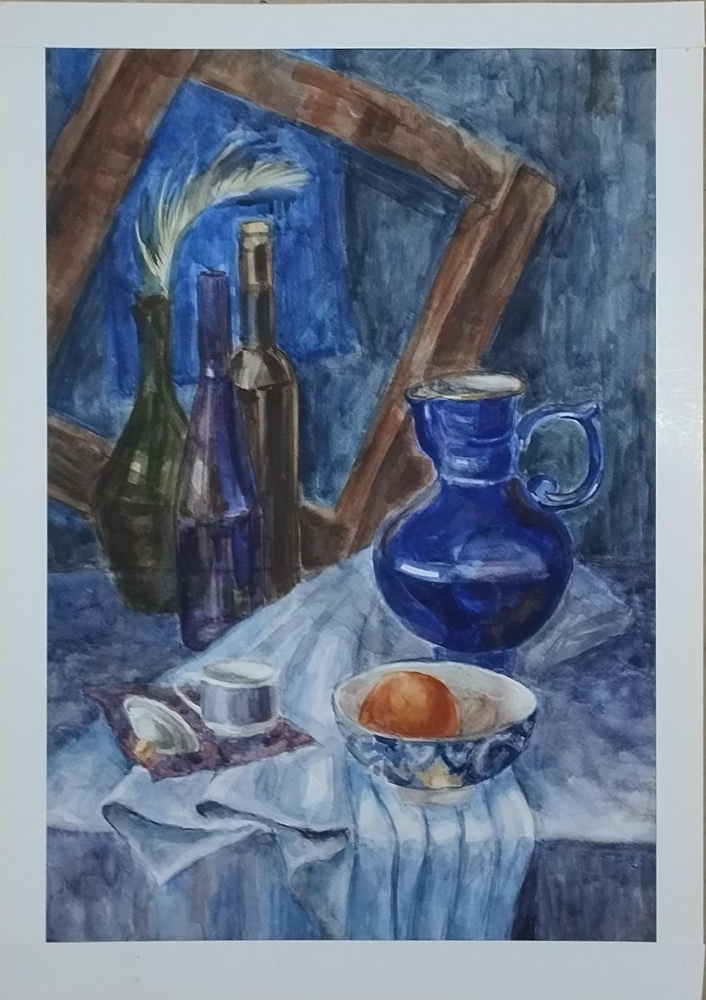
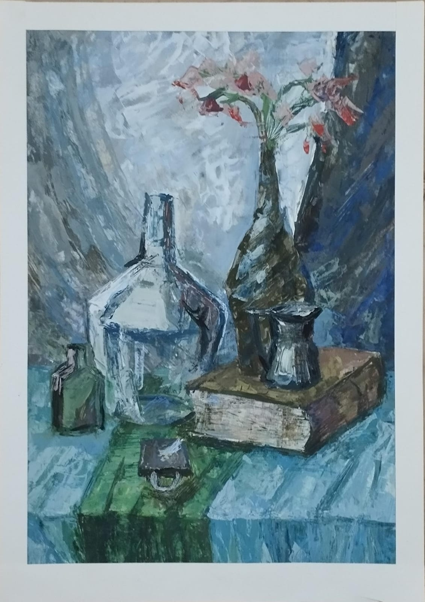
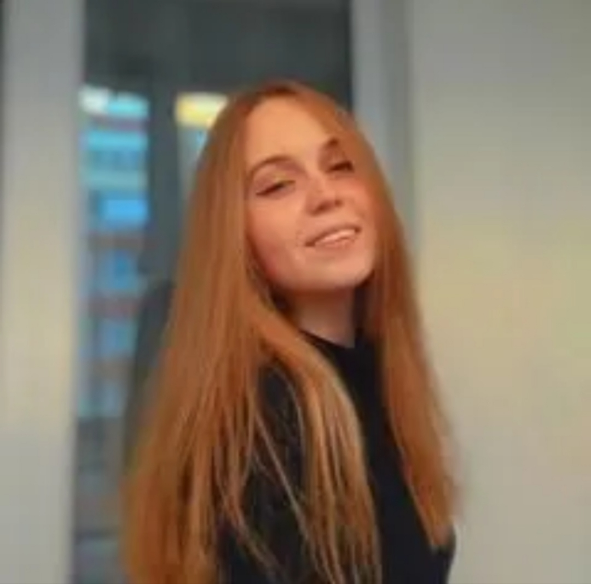
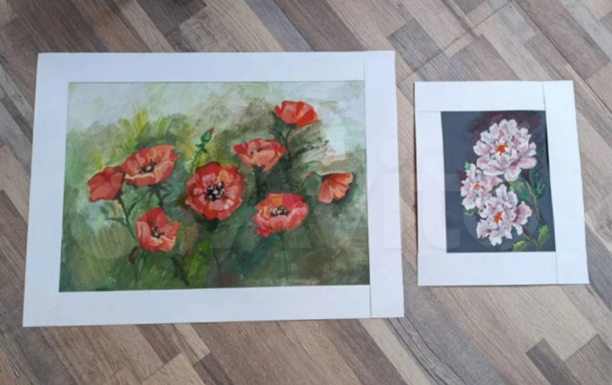
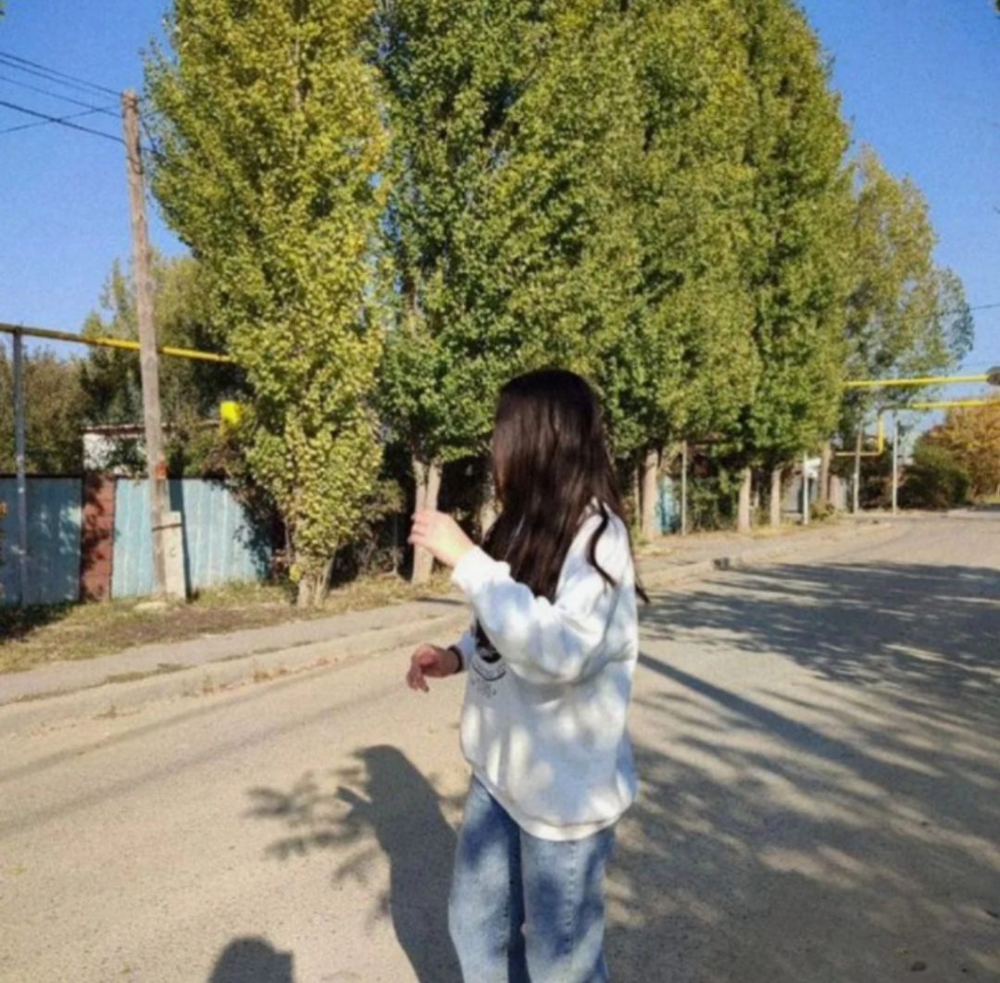
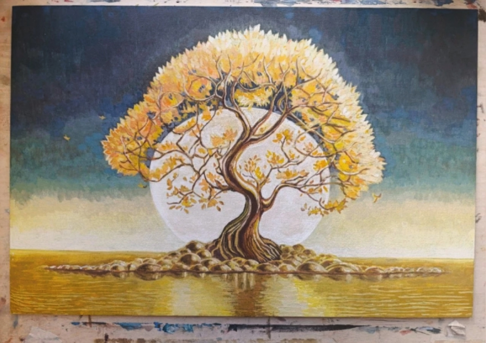
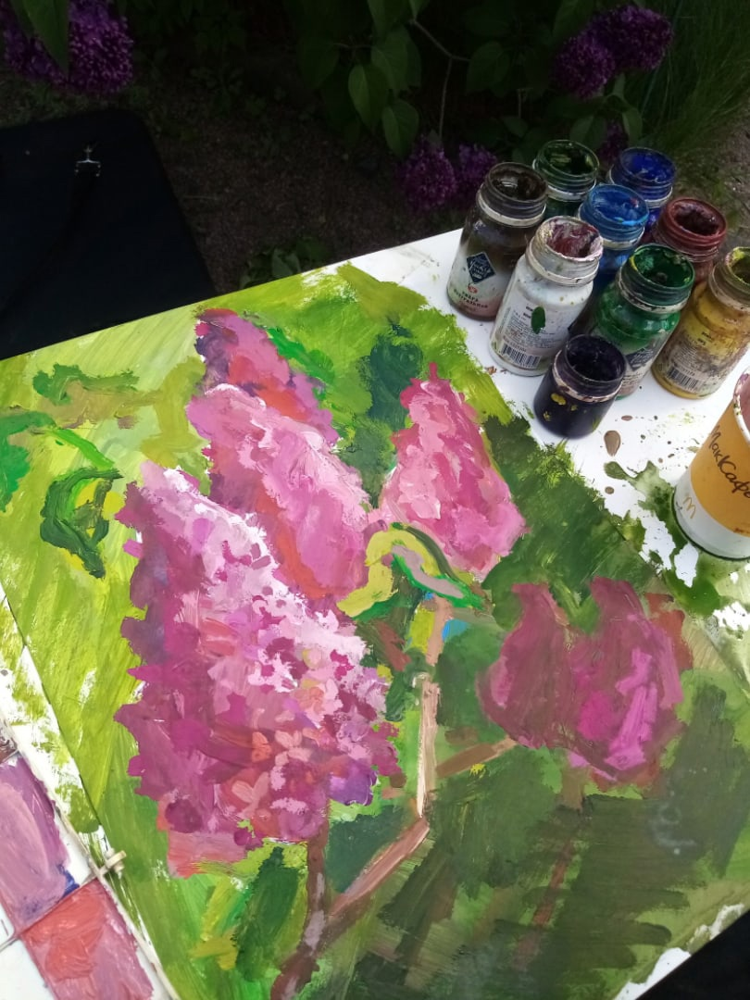

Обо мне
Мой фокус — построение выразительных визуальных систем с сильной атмосферой, глубиной и характером. Мне близка тёмная, индустриальная и кинематографичная эстетика, где важны не только структура и читаемость, но и общее состояние изображения. Вдохновляюсь японской визуальной культурой, прежде всего работами Ёситаки Амано и Мамору Осии, где свет, композиция и ритм формируют целостную систему и создают эмоциональное пространство. В работе стремлюсь к балансу между строгой дизайнерской структурой и точечным экспериментом — когда это усиливает идею и задачу проекта.
Образование:
2011–2021 ДШХ им. Кустодиева,
2019–2023 Гимназия 190,
2023–2028 СПбГУПТД (графический дизайн).
Материалы:
Живопись — гуашь, темпера, акварель
Графика — графит, сепия, уголь, сангина, пастель, тушь
Прочее — коллаж, смешанные техники
Мои работы (примеры)

Крепость Финляндия
Гуашь, темпера · Бумага А2
Натюрморт со стеклом
Акварель · Акварельная бумага А2
Натюрморт мастихином
Гуашь, темпера · Бумага А2Отзывы

Юля
8 мая 2025
★★★★★

Заказывала зарисовки цветов. Очень быстро и красиво!

Наталия
28 мая 2025
★★★★★

Картина превзошла ожидания. Вы талант!
Евгения
14 января
★★★★★

Быстро договорились, работа отличная, всё понравилось!